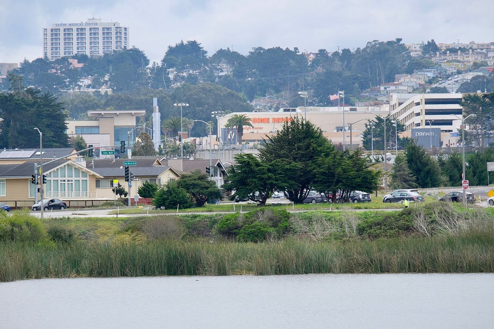

Lakeshore
The city's Lakeshore analysis neighborhood, in the south-western corner of San Francisco around Lake Merced and the San Francisco State University campus.

Map
Named buildings and landmarks
-
1
-
2
-
3
-
4
-
5
-
6
Streets documented so far
- 19th Avenue
1 building, built 1950; 1 in the Parkmerced Historic District. - 20th Avenue
1 building, built 1988. - Brotherhood Way
2 buildings, built 1963–1983; 2 in the Brotherhood Way Historic District. - Buckingham Way
1 building, built 1988. - Harding Road
1 building; 1 in the Midcentury Recreation Historic District (Discontiguous). - Holloway Avenue
1 building. - Ocean Avenue
1 building, built 1941. - Varela Avenue
1 building, built 2020; 1 in the Parkmerced Historic District. - Winston Drive
1 building. - Zoo Road
1 building.
Parks and public spaces
- Lake Merced Park
Regional park, 608.6 acres. - San Francisco Zoo
Zoo, 131.5 acres.
Historic districts here
Adjacent neighborhoods
Sunset / Parkside adjoins north across Sloat Boulevard. East beyond Junipero Serra Boulevard are West of Twin Peaks and the residence park at Ingleside Terraces, and Oceanview / Merced / Ingleside lies east around Lake Merced.